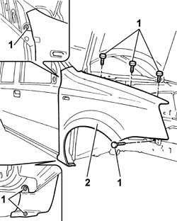
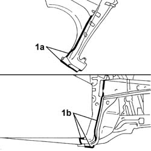

7210E18 R.R. FRONT WING
- Path
- Procedures > 72 PANELS AND FRAME > 7210 REMOVING REFITTING > 7210E EXTERNAL PARTS > 7210E18 R.R. FRONT WING
- Kind
- repair procedure (removal / refitting; the operation number is the code)
- Applies to
- all engines; all production periods
- Interactive page
- https://sloeber94.github.io/elrnDB-fPnd/en/#/2753354
Applies to: all engines; all production periods
 Removing
Removing
 Refitting
RefittingLift the bonnet lid.
Protect the corner of the door, the door sill and the front pillar base by applying adhesive tape.
1. Undo the retaining bolts.
2. Remove the front wing.

Applies to: all engines; all production periods
Refitting
RemovingCheck the wing is undamaged.
Remove the residues of sealant from the bodyshell and from the wing.
1. Renew the sealant on the front wing (1a) and on the bodyshell (1b).

Applies to: all engines; all production periods
Position the wing and screw in the bolts and nut without tightening.
Check the wing is aligned with the door and the bonnet lid.
Tighten the bolts to torque.
 | Fastening | Component | Ø | Value (daNm) |
|---|---|---|---|---|
- | Bolt | FRONT WING. BODYSHELL | M6 | 0.8 |
Topics linked from this page (2)
- 7005A14 front side door - adjust centering and moulding - includes adaptation of hinges and seals on door compartment
- 7025A10 bonnet lid - square